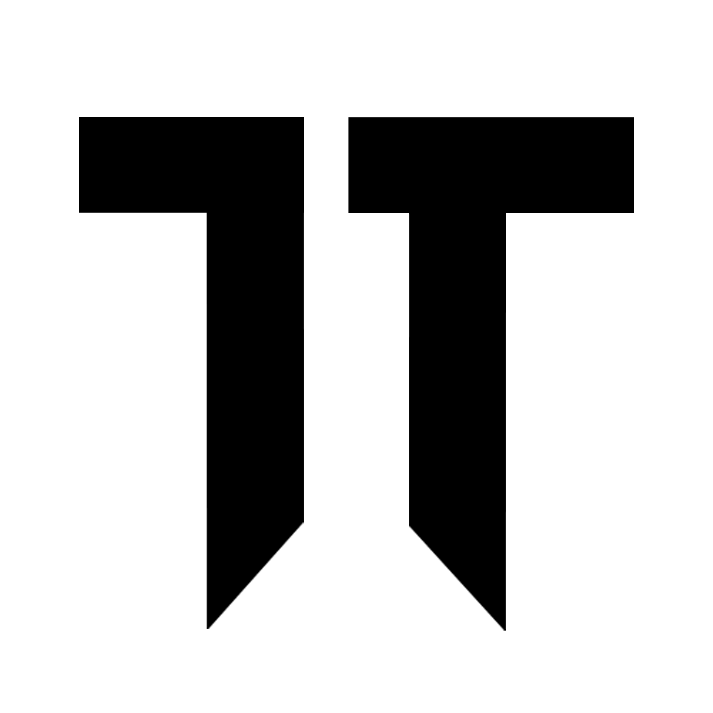

 Generator Undangan WA
Gunakan **
{{NAMA_TAMU}}
** sebagai placeholder di template pesan.
Template Pesan Undangan:
Yth. Bapak/Ibu {{NAMA_TAMU}}, Kami mengundang Anda ke acara pernikahan kami. Link Undangan: [Link Undangan Digital Anda] Hormat kami.
Daftar Nama Tamu (Satu Nama Per Baris):
Eaxmple
Buat Link WA Personalisasi
Hasil Link Undangan